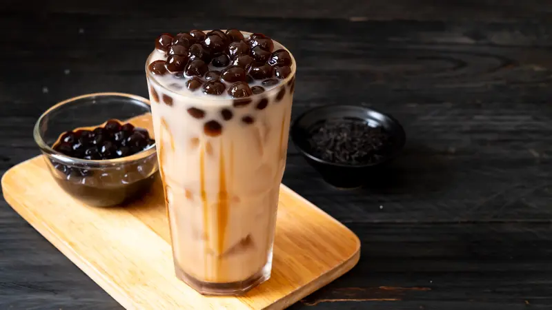
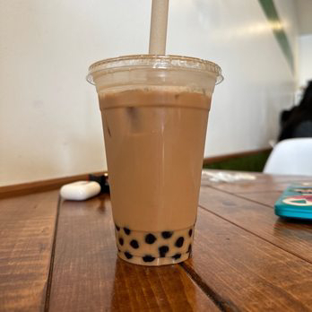

Haloo sobat pecinta minuman maniss 👋🏻 Ada yang tau gak nih kira-kira
apa minuman yang lagi trend saat ini?
Yup, Jawabannya adalah Boba

Boba merupakan olahan dari
tepung tapioka yang dibentuk bulat lalu dimasak dengan
gula merah sehingga terciptalah rasa
manis pada rasanya
😉 Biasanya Boba disajikan sebagai topping di
minuman-minuman yang memiliki rasa manis namun kali ini saya akan
memperkenalkan produk saya bahwa Boba tidak saya gunakan sebagai
topping saja melainkan sebagai bahan pokok
produk saya ini lhooo~!!🤩
Tadaa, ini dia produk minuman saya. Produk Minuman ini bernama BUBUBA

BUBUBA adalah
produk minuman yang diolah dari bubuk susu Milo yang
dipadukan dengan kenyalnya boba yang manis lalu
ditambah dengan topping bubuk milo diatasnya 🥰
BUBUBA yang saya buat ini memiliki rasa manis yang pas dan
tidak terlalu berlebihan sehingga aman untuk dikonsumsi oleh orang
dewasa maupun anak-anak dan remaja 👥️
Selain itu BUBUBA yang saya buat
ini terjamin dapat menunda lapar karena isinya yang banyak dan ditambah
lagi dengan extra topping bubuk Milo diatasnya~!!🧋 Nah, cocok nih buat
kamu ngemil kalo lagi badmood, maraton drakor, pusing saat ngerjain tugas
atau sebel nungguin lama balesan chat dari si doi 🫶🏻
Untuk harga nya tentu sangat terjangkau buat kamu yang lagi pengen
ngemil hemat nih 😉 Harga 1 pcs hanya Rp. 6.000 saja
kok💸tidak lebih tidak kurang kalo kelebihan nanti kaya kamu yang
terlalu berlebihan dalam mencintai dia 🫣🤫
Yakin gak mau coba nih?
Hayukk cobain rasa manis dari BUBUBA ini yang bikin balikin
moodmu lagii~!! 🤩
Untuk info lebih lanjut kamu bisa follow Instagram BUBUBA: @𝗯𝘂𝗯𝘂𝗯𝗮𝗺𝗶𝗹𝗸
Atau dengan mengirim pesan pada saya melalui WhatsApp Diatas
Kembali Keatas